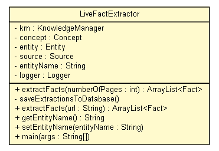

tud.iir.extraction.fact
Class LiveFactExtractor

java.lang.Object
 tud.iir.extraction.fact.LiveFactExtractor
tud.iir.extraction.fact.LiveFactExtractor
public class LiveFactExtractor
- extends java.lang.Object
The LiveFactExtractor manages fact extraction for entity names of unknown concepts.
Only the names of the entities are known.
| Methods inherited from class java.lang.Object |
clone, equals, finalize, getClass, hashCode, notify, notifyAll, toString, wait, wait, wait |
km
private KnowledgeManager km
concept
private Concept concept
entity
private Entity entity
source
private Source source
entityName
private java.lang.String entityName
logger
private static final org.apache.log4j.Logger logger
LiveFactExtractor
public LiveFactExtractor(java.lang.String entityName)
extractFacts
public java.util.ArrayList<Fact> extractFacts(int numberOfPages)
- Extract facts for the entity name.
- Parameters:
numberOfPages - The number of pages that are searched through for facts.
- Returns:
- An array of extracted facts.
saveExtractionsToDatabase
private void saveExtractionsToDatabase()
extractFacts
public java.util.ArrayList<Fact> extractFacts(java.lang.String url)
getEntityName
public java.lang.String getEntityName()
setEntityName
public void setEntityName(java.lang.String entityName)
main
public static void main(java.lang.String[] args)